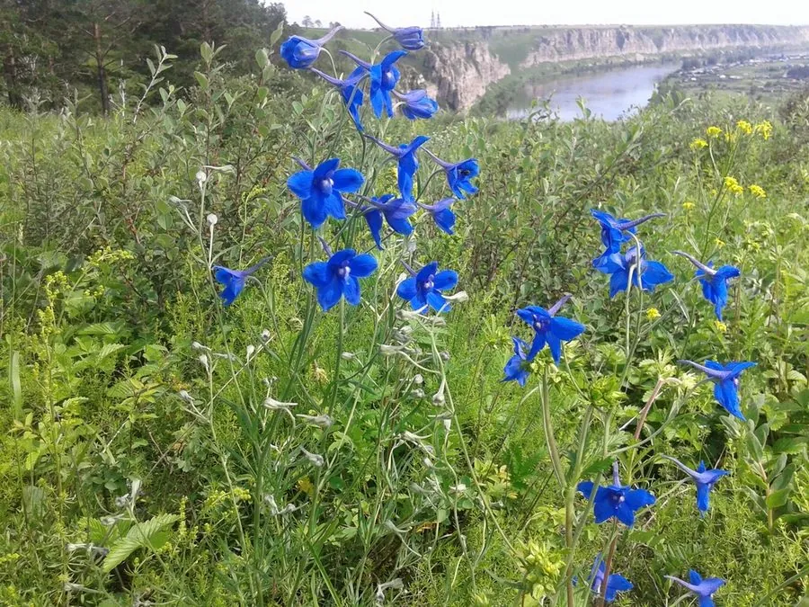

花卉与草本 · 植物界
翠雀 Delphinium grandiflorum

毛茛科多年生草本，蓝色花朵后方拖细长距，形似飞燕栖枝，是花境中优雅的竖线条花卉，原产中国北方与西伯利亚。
- 分类
- 门被子植物门纲木兰纲目毛茛目科毛茛科属翠雀属
- 栖息环境
- 中国北方与西伯利亚的草原、山地草甸，喜凉爽、阳光充足
- 地理分布
- 原产中国北方、蒙古与西伯利亚，中国北方山地有分布
- 保护级别
- 暂无评估
物种志
翠雀为毛茛科翠雀属多年生草本，株高 40–80 厘米，茎直立，多分枝，全株被短柔毛。叶片掌状深裂，裂片线形。总状花序顶生，花两侧对称，萼片呈花瓣状，蓝色或蓝紫色，后方有细长的距，花期 6–8 月；果实为蓇葖果。
翠雀原产中国北方、蒙古和西伯利亚的草原与山地，喜凉爽、阳光充足和排水良好的环境，耐寒不耐酷热。它花形别致、蓝紫色调清新，是花境中优良的竖线条材料；全株含二萜类生物碱，有毒，误食会引起中毒，栽培时应远离儿童与宠物。翠雀与飞燕草同科不同属，二者花形相似，但翠雀多为多年生；花后及时剪除残花，可促进侧枝再次抽出花穗。
形态与习性
- 株高40–80 厘米，茎直立多分枝
- 花期6–8 月
- 果期花后结蓇葖果
- 光照喜充足阳光
- 水分喜湿润，忌积水
- 土壤疏松、排水良好的壤土
- 主要用途花境、切花、庭院点缀
趣味知识
- 翠雀花后方的细长距是容纳花蜜的结构，与飞燕草相似。
- 它多为多年生，而飞燕草多为一年生，二者同科不同属。
- 翠雀全株含生物碱，有毒，栽培时应远离儿童与宠物。
- 蓝紫色花序高挺，是花境中的竖线条材料。